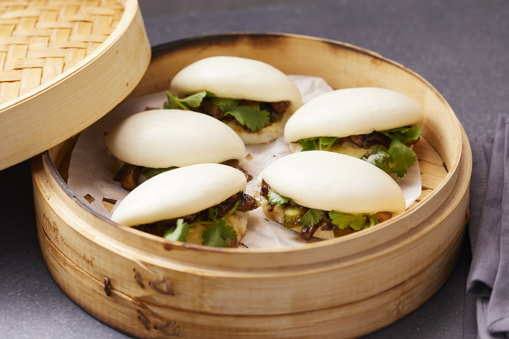

Mushroom Bao

Soft & fluffy bao, filled with delicious sauteéed mushrooms
These buns are a pain in the buns to make! But their fluffy, slightly chewy
exterior and salty-savory mushroom filling make them well worth the effort.
Ingredients:
Dough:
- 300g all-purpose flour
- 60g wheat starch
- 50g sugar
- 4g instant yeast
- 1 Tbsp oil
- 1/2 tsp salt
- 180ml cold milk
Mushroom filling:
- 500g mushrooms of your choice
- 1 clove garlic
- 1/4 cup soy sauce
- 1 green onion stem
- 1/2 Tbsp corn starch
- (optional)1-2 hot peppers
- 2 Tbsp sesame oil
Instructions:
Note that you'll want to prepare the filling first, and allow it enough time to cool before filling the bao.
Mushroom filling:
- Chop mushies.
- Sautée mushies with oil over medium heat, stirring often.
- When mushrooms have browned a bit, add in the green onion. Allow both mushrooms and onions to take on a bit more colour.
- Add in garlic and hot peppers if using, and sautée for about a minute.
- Mix cornstarch and soy sauce, and add to pan. Turn off the heat and continue to stir until the sauce thickens (this shouldn't take long).
Dough:
- In a mixing bowl, add all dry ingredients and stir to combine.
- Add milk and oil to the dry ingredients, and mix until you get a rough dough. Cover the bowl with a kitchen towel and let the dough hang out for 15 minutes.
- Knead the dough until it's smooth and elastic (about 30 minutes by hand).
- Divide the dough into 10 equally-sized portions, roll them flat, and fill them.
Filling and steaming:
- Fill 'em.
- Proof 'em for an hour, or until the dough springs back slowly when you press a finger into it.
- FIll your bao-laden steamer with water, and place it over medium heat. Once the water reaches a simmer, set a timer for 10 minutes.
- Turn off the heat. Don't open the steamer lid, let the bao hang out for 3 minutes, this prevents them from deflating/wrinkling.
- Transfer bao to a wire rack to cool, then enjoy.